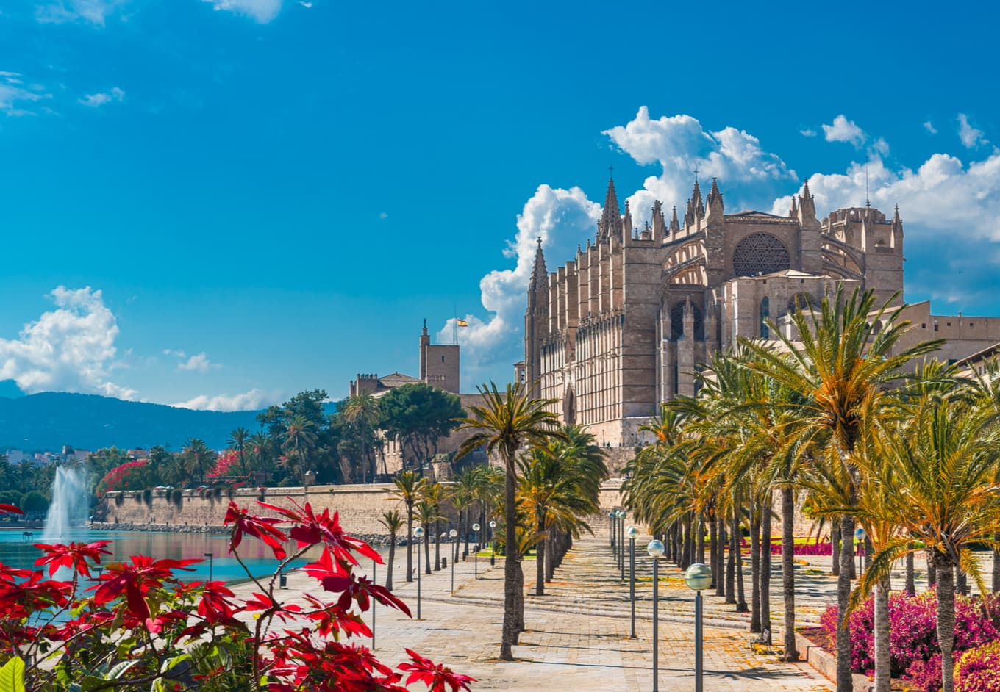
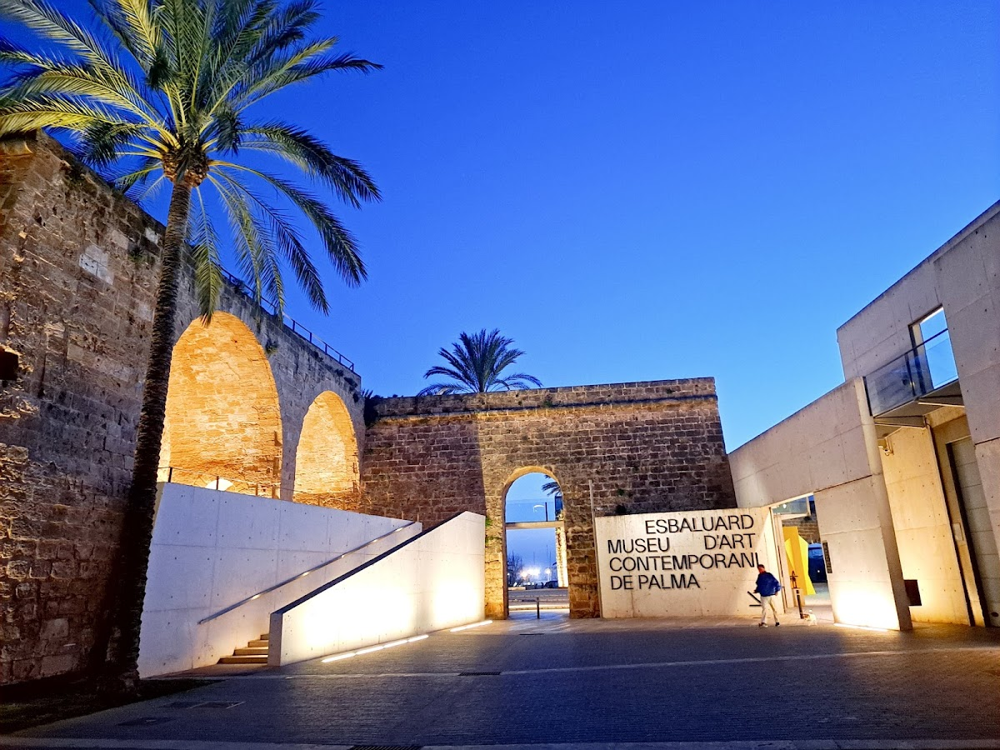
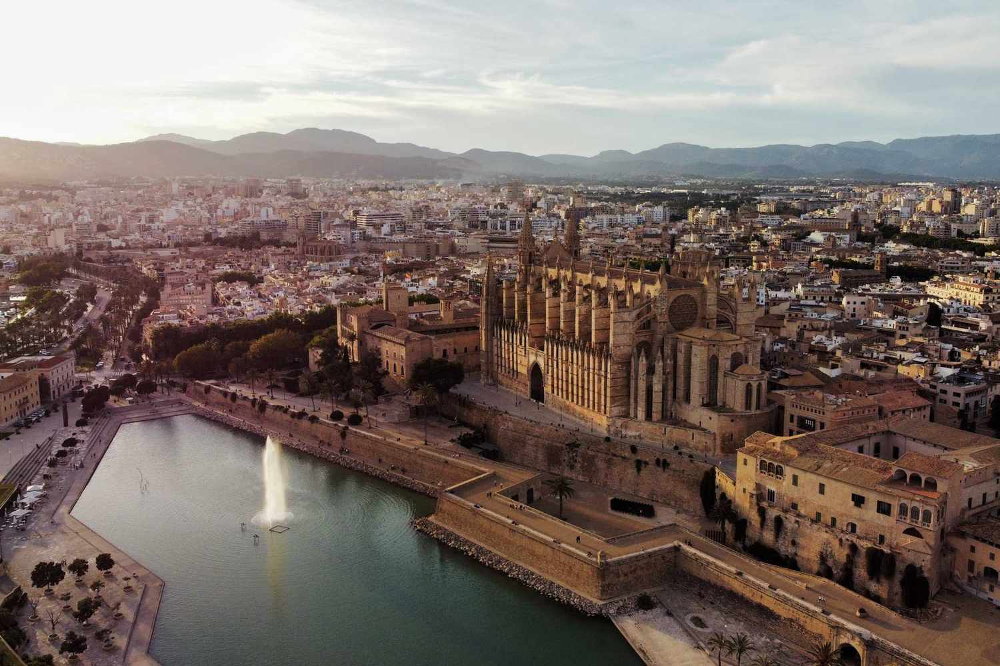
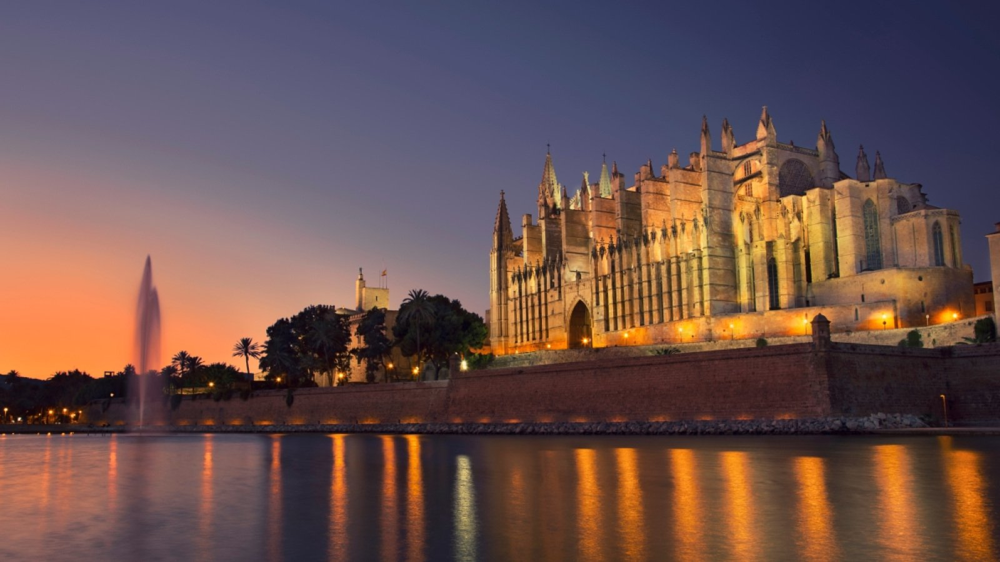
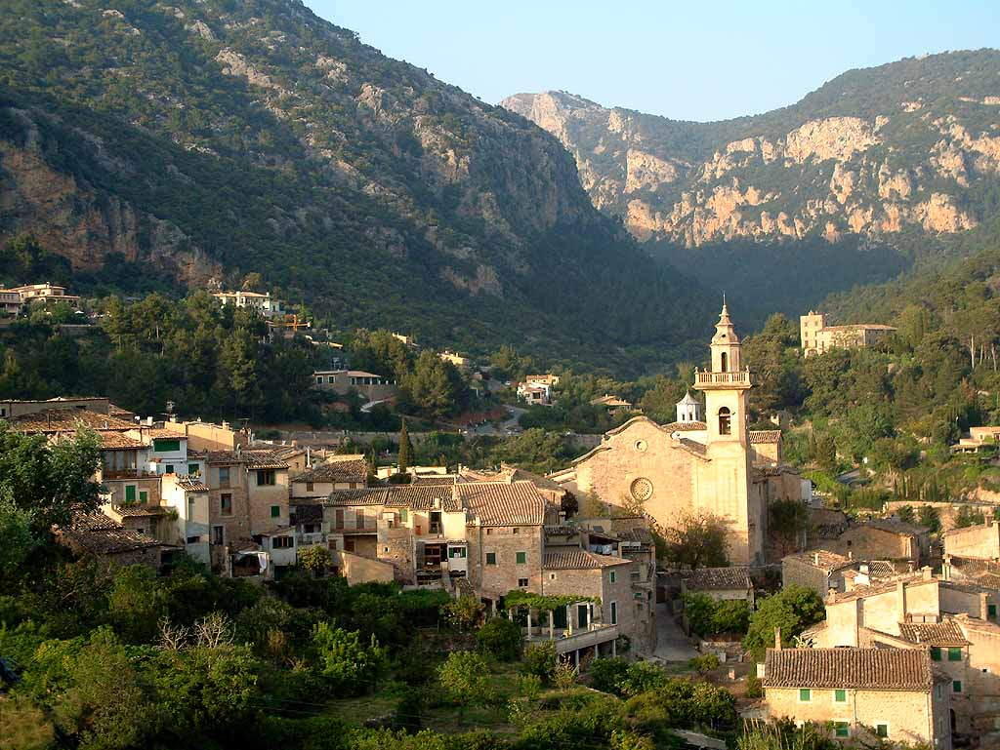
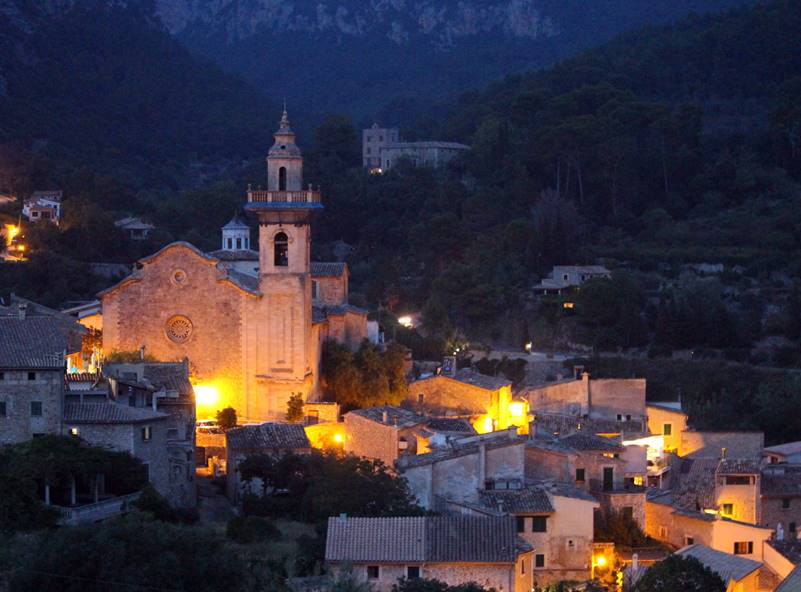
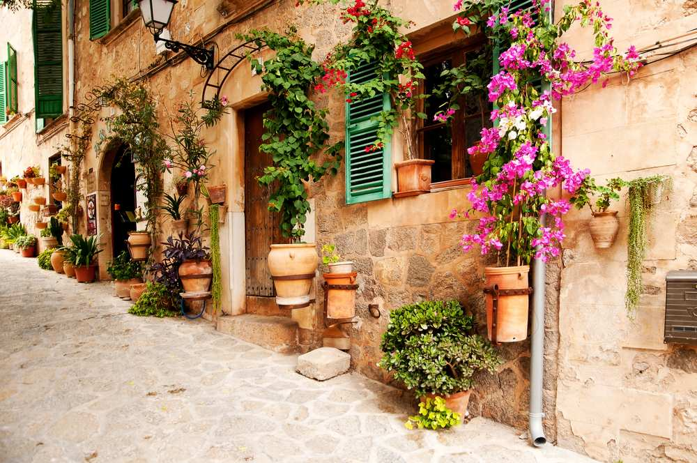
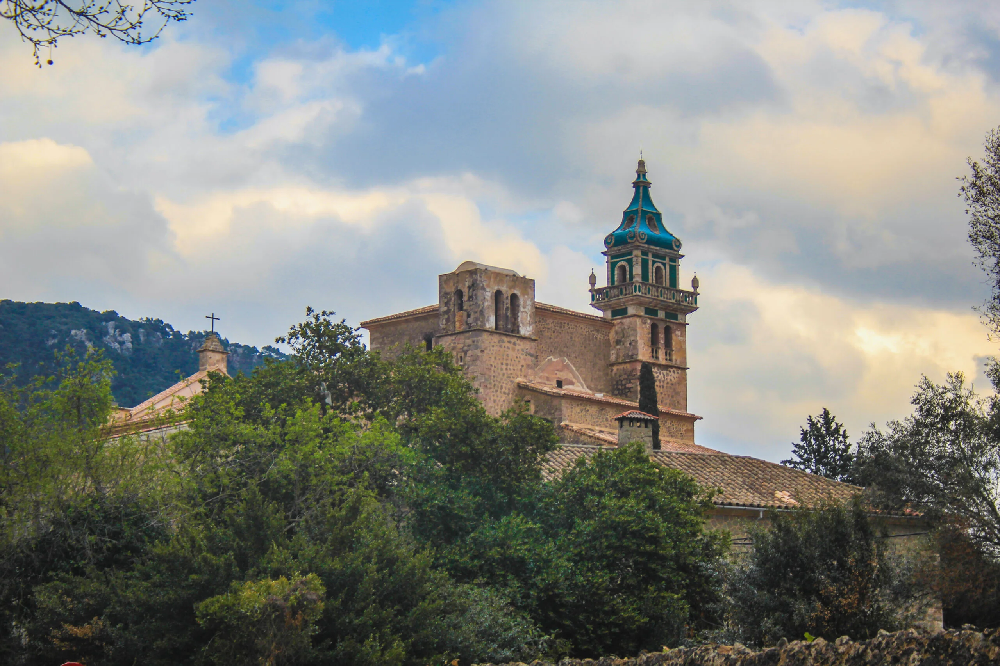

Palma, the vibrant capital of Mallorca, offers a captivating blend of history, culture, and Mediterranean charm. Nestled between the Serra de Tramuntana mountains and the stunning coastline, the city is renowned for its iconic La Seu Cathedral, a Gothic masterpiece with breathtaking views over the sea. The historic heart of Palma is rich with charming streets, ancient buildings, and landmarks like the Palacio Real de la Almudaina, a former Moorish fortress turned royal palace.
Beyond its architectural wonders, Palma also boasts beautiful green spaces such as Parc de la Mar, and nearby beaches like Playa de Palma and Cala Mayor offer sun-soaked relaxation. The city’s thriving cultural scene includes the Es Baluard Museum for modern art and a calendar full of local festivals and events. Palma's food scene is a delight, with traditional Mallorcan dishes like tumbet and ensaimada available in bustling markets and restaurants.
The city's blend of old-world charm and modern amenities, from luxury shopping on Passeig des Born to lively nightlife, makes it a dynamic destination. Whether you're exploring historical sites, enjoying local cuisine, or relaxing by the sea, Palma promises a memorable experience for every traveler.




2.
Valldemossa -
Charming mountain village
Nestled in the heart of the Tramuntana mountains, Valldemossa is a picturesque village that blends rich history, cultural heritage, and natural beauty. Known for its cobblestone streets, charming stone houses, and breathtaking mountain views, this tranquil village has long captivated visitors seeking a serene escape.
At the heart of Valldemossa lies La Cartuja de Valldemossa, a historic monastery that once hosted composer Frédéric Chopin and writer George Sand during a memorable winter in 1838-1839. Their stay in the monastery is a key part of the village's cultural identity, and visitors can explore the rooms they occupied, along with the stunning church and gardens.
Beyond its historical sites, Valldemossa offers a delightful experience with its narrow streets adorned with vibrant bougainvillea and traditional Mallorcan shops and cafes lining the main square, Plaça de la Cartuja. The village is also a haven for outdoor enthusiasts, surrounded by the dramatic landscapes of the UNESCO-listed Serra de Tramuntana mountains.
Hikers can explore scenic trails that wind through olive groves and forests, offering panoramic views of the valleys and the Mediterranean Sea in the distance. Valldemossa’s peaceful ambiance, combined with its rich architectural heritage and stunning surroundings, make it an ideal destination for those looking to experience the timeless charm of Mallorca.




3.
Formentor -
Breathtaking coastal views and tranquility
Formentor, located on the northern tip of Mallorca, is a stunning natural paradise known for its dramatic cliffs, crystal-clear waters, and lush Mediterranean vegetation. Surrounded by the majestic Serra de Tramuntana mountains, this coastal gem offers some of the island’s most breathtaking scenery, making it a must-visit destination for nature lovers and adventurers.
One of the highlights of Formentor is its iconic lighthouse, Faro de Formentor, perched high above the Mediterranean, providing panoramic views of the rugged coastline and the neighboring island of Menorca on clear days. Visitors can take scenic drives or hikes through winding roads, enjoying stunning vistas along the way.
The region is also home to idyllic beaches, such as the secluded Platja de Formentor, with its fine white sand and turquoise waters, perfect for swimming and sunbathing. The surrounding landscape, dotted with pine forests and rocky cliffs, creates a tranquil and unspoiled environment, ideal for relaxation or outdoor activities.
Formentor is not just a haven for beach lovers; it’s a popular spot for hiking and cycling enthusiasts, with numerous trails that wind through the hills and offer stunning views of the Mediterranean coastline. The area’s pristine beauty and peaceful atmosphere make it the perfect escape for anyone seeking serenity and adventure amidst nature’s splendor.
Whether exploring the rugged landscapes, enjoying a day at the beach, or simply taking in the spectacular views, Formentor is a true gem that embodies the raw beauty of Mallorca’s northern coast.